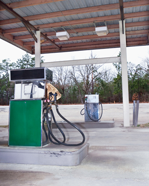

© 2008 Jupiterimages Corporation
What happens when a gasoline station closes? Have you seen what it takes to reclaim the area? It’s pretty hard to miss the excavation of the underground fuel tank, but many of us don’t notice the removal of the soil—lots of soil!
Gasoline is a mixture of many hydrocarbons. In the past, benzene was added to fuel to improve fuel’s performance. You might have heard of benzene—researchers suspect it causes cancer.
Benzene belongs to a class of hydrocarbons, the aromatic compounds, which occur naturally but have very unique chemical properties. How do the chemical properties of benzene relate to the clean-up of land at abandoned gas stations? In Lesson 4 you will begin to learn about benzene and aromatic compounds.
Consider the following questions as you complete Lesson 4:
There is no assignment for this lesson. However, you will be asked to submit samples of your work to your teacher where instructed.
You must decide what to do with the questions that are not marked by the teacher.
Remember that these questions provide you with the practice and feedback that you need to successfully complete this course. You should respond to all the questions and place those answers in your course folder.